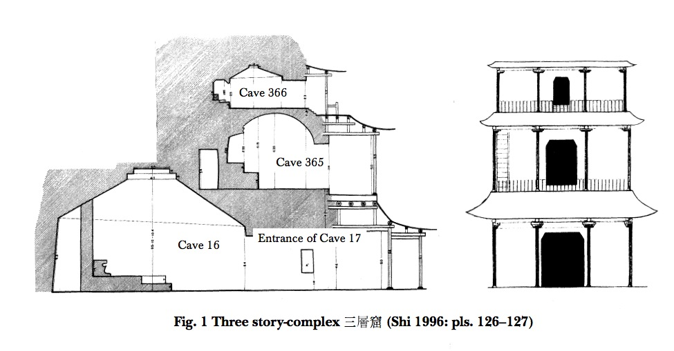
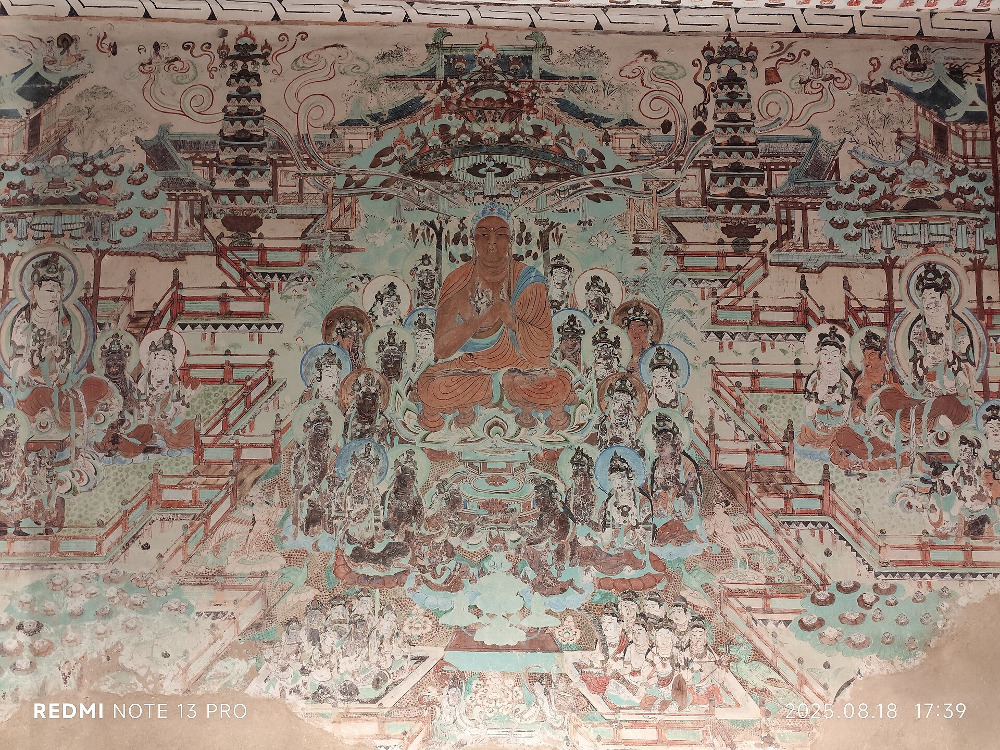

第 5 章
藏经洞的黄昏
从广胜寺那面被售卖的墙，到西域石窟的切痕，流散的故事不断从石窟与寺院转向更内在的载体——写在纸绢上的文字与图像。
敦煌莫高窟第16窟甬道的积沙，在光绪二十六年五月已经堆得很高了。王圆箓雇了几个工人清理，甬道北壁的壁画逐渐露出来，裂缝也露出来。工人用旱烟管敲了敲那面墙，声音空洞。拆开墙壁，里面是一间小石室，约三米见方，从地面到窟顶堆满了经卷、文书、绢画。这个后来编号为第17窟的密室，封闭了近九百年，在这一刻被打开。
王圆箓是道士。他从湖北麻城一路化缘到敦煌，接手了这座佛寺遗址，想要把它改成道观。他对佛教文献没有内在的亲近感，但他知道这些东西可能值钱——或者说，可能换来修缮洞窟的钱。他取出几卷写经，送到敦煌县令汪宗翰那里。汪宗翰是进士出身，能看出这些写本年代久远，但他能做的不多。
他把其中几卷转呈给甘肃学政叶昌炽，附了一封信，建议将这批文献运到兰州保管。叶昌炽是金石学家。他认出了这些写经的价值，在日记里记下此事，估算了一下运费——大约要五六千两银子。这笔钱在当时可以买下敦煌县城半条街的房产。叶昌炽没有这笔钱，甘肃省的财政也没有这笔钱。
他的建议停留在日记里。官方最后的意见是“就地保管”，意思是：留在原地，由王道士看管。这构成了流散的第一个条件。不是某个人的贪婪或愚蠢，而是一个系统性的空缺：清末的官僚体系既无法评估这批文献的价值，也没有预算来处理它们。文献的物理位置仍在洞窟，但其法律与文化意义上的归属已经悬置。
它们处于一种无主亦无管的状态，等待第一个有能力、有意愿采取行动的人。斯坦因在1907年3月抵达敦煌。他是匈牙利裔的英国人，为英属印度政府服务，正在进行第二次中亚探险。
此前他已经在和田、尼雅等地发掘了大量遗址，获取了佉卢文木牍、梵文写本等文物。敦煌不是他此行的主要目标——他在出发前甚至不知道有藏经洞这回事。他是在路上听一位从乌鲁木齐来的商人说起这批文献，才决定绕道前往。斯坦因不懂汉语。他的中文助手蒋孝琬承担了所有沟通工作。蒋孝琬是湖南人，曾在新疆的官府做师爷，精通官场礼仪和文书往来。


他对王圆箓的判断是：一个虔诚但无知的宗教狂热者，对佛教文献既不了解也不尊重，但对自己的宗教使命极为认真。这个判断构成了斯坦因策略的基础。斯坦因没有直接提出购买。他先参观了洞窟，表达了对王圆箓修缮工作的赞赏。
然后他提到了玄奘——这位唐代高僧曾从印度取回佛经，翻译成汉文。斯坦因告诉王圆箓，他自己是从印度来的，是玄奘精神的追随者，此次东行正是为了寻找玄奘当年翻译的佛经原本。他说得诚恳。蒋孝琬翻译得更诚恳。王圆箓被这个说法打动了。
玄奘在民间信仰中地位极高，西天取经的故事通过《西游记》的传播早已深入底层社会。一个外国人不远万里来寻找玄奘的经文，这在他眼中不是掠夺，而是一种虔诚。他在夜里偷偷打开了藏经洞的门，让斯坦因和蒋孝琬进去挑选。斯坦因在后来的回忆录中描述了那个场景：狭窄的石室里，经卷一层一层垒起来，从地面几乎堆到窟顶。他只能蹲在洞口，由蒋孝琬从里面递出卷子。
烛光下，他们逐一展开那些写本——有些是佛经，有些是道经，有些是官方文书，有些是寺院账册，有些是契约，有些是信件。汉文、藏文、回鹘文、于阗文、粟特文、梵文，各种语言的文本混杂堆放，没有任何分类。斯坦因不是汉学家。他无法凭内容挑选精品。
他的策略是批量获取：尽可能多地拿走，回去后再由专家整理。蒋孝琬则凭经验帮他淘汰了那些明显重复或残损严重的卷子。交易持续了好几个夜晚。最终，斯坦因用四个马蹄银——约合二百两银子——换走了二十四箱写本和五箱绢画、刺绣。总计约一万四千件。
这批文献被运到安西，然后经印度运往伦敦。大英博物馆在1909年接收了这批藏品。馆方最初将它们视为印度考古的一部分——因为斯坦因受英属印度政府委派——存放在印度事务部的库房里。直到1910年代，汉学家们才开始意识到这批材料的价值。翟理斯承担了编目工作，他花了近四十年时间，将这批写本逐一登记、分类、编号。每一个写本都获得了一个以“S.”开头的编号。
S.1，S.2，S.3……一直排到一万三千多号。伯希和是在斯坦因之后到达敦煌的，时间是1908年2月。他是法国人，法兰西远东学院的汉学家，精通汉语、藏文、回鹘文、粟特文、梵文等多种语言。他在出发前已经听说了藏经洞的消息——斯坦因运走大批文献的事在新疆的外国人圈子里已经传开。伯希和的策略不同。他不追求数量，他追求质量。伯希和的日记记录了他在藏经洞内的挑选过程。王圆箓同样在夜里为他打开了洞门。伯希和蹲在狭窄的石室里，就着蜡烛光，一卷一卷地翻看。
他懂内容。他能辨认出哪些是罕见的佛经版本，哪些是失传的经典，哪些是有纪年的题记，哪些是俗文学文本，哪些是官方文书。他给自己定了一个标准：只选那些有明确年代标记的、有特殊文献价值的、或者非汉文的写本。他在洞里待了三个星期，每天工作十几个小时，翻遍了大约一万五千卷文献。他选出了大约六千卷。
其中有《论语》的唐代抄本，有失传的《老子化胡经》，有最早的印刷品《金刚经》——卷末刻有“咸通九年四月十五日王玠为二亲敬造普施”字样，这是世界上有确切纪年的最早印刷品，比古腾堡圣经早了近六百年。还有大量的景教文献、摩尼教经典、祆教文书。这些文本在汉文文献中几乎完全失传，只在敦煌写本中保留下来。伯希和没有像斯坦因那样秘密运输。
他将这批文献运到北京，在六国饭店举办了一个小型展览，邀请在京的中外学者参观。正是这个展览，让中国学界第一次亲眼看到藏经洞文献的真实面貌。罗振玉、王国维等人到场参观，他们震惊了。罗振玉当场向学部官员建议，立即将藏经洞剩余文献全部运到北京。清政府的反应比七年前迅速了一些。1909年，学部下令将藏经洞剩余文献全部解运北京。
但这一过程充满了损耗。在押运途中，经卷被层层截留——地方官员私拿，押运人员私拿，沿途关卡私拿。到达北京时，原本登记在册的八千多卷只剩下了六千余卷。
更糟糕的是，押运人员发现有些卷子太长，不便装箱，竟然将长卷一撕为二甚至为三，凑数交差。今天在中国国家图书馆的敦煌写本中，还能看到那些被撕开的卷子——它们的断裂处整齐，纸色新旧不一，是那次运输留下的伤痕。而王圆箓呢？
他在交易中获得了银子，用于修缮洞窟。他建了一座新的道观，给洞窟刷了白灰，将一些他认为“不敬”的佛教壁画覆盖掉。他继续守在莫高窟，直到1931年去世。他始终认为自己是在为宗教服务。那些经卷在他眼中，只是换钱的物品，不是需要守护的文献。科兹洛夫是俄国人，1909年到达敦煌。他来得太晚了。藏经洞已经空了。
但他从王圆箓那里买到了一些私人留存的写本残片，又从当地居民手中收购了一些散落的卷子。这批文献约有三百多件，后来入藏圣彼得堡的亚洲博物馆。数量不多，但其中有一些极为珍贵的回鹘文和西夏文文献，因为科兹洛夫此前在黑水城发掘过大量西夏文献，他懂得这些文字的价值。大谷光瑞是日本西本愿寺法主，也是一位探险家。
他的探险队在1910年代到达敦煌，同样从王圆箓手中买到了一些残卷。这批文献后来入藏京都的龙谷大学，被称为“大谷文书”。数量约一千余件，其中有一些非常独特的景教和祆教文献。至此，藏经洞文献的流散格局基本形成：斯坦因带走的最多，约一万四千件，入藏大英博物馆；伯希和带走的精品最多，约六千件，入藏法国国立图书馆；清政府运走剩余部分，约六千余件，入藏京师图书馆；科兹洛夫和大谷光瑞各带走数百至千余件，分别入藏圣彼得堡和京都。
此外还有少量散入德国、瑞典、美国等地的收藏机构。总数约五万件的藏经洞文献，被分散到四大洲的十几个城市。它们不再是同一个空间里的共存物，而是成为不同国家、不同机构、不同学科分类体系下的独立藏品。这个分散过程不仅仅是物理空间的转移。藏经洞文献原本的共存状态，构成一个完整的知识世界。佛经与道经并列，说明三教合流在敦煌地区的实际样态；汉文写本与回鹘文、于阗文、藏文文献杂处，说明多民族多语言社群如何共享同一个信仰空间；
官方文书与寺院账册交错，说明世俗权力与宗教机构之间的日常互动；精美的绢画与粗糙的契约共存，说明艺术生产与经济活动在同一空间内展开。这不是一个按主题分类的图书馆，而是一个寺院近千年生活的完整遗存。当这些文献被按语言、材质、主题分别购入不同国家的收藏机构后，这个知识世界的完整性被解构了。
大英博物馆将斯坦因藏品按语言分类：汉文写本归入中文部，藏文写本归入印度部，回鹘文和粟特文写本归入中亚部。法国国立图书馆将伯希和藏品按材质分类：写本入善本部，绢画入东方部，织物入工艺部。同一个寺院、同一个洞窟里取出的物品，被分配到不同的库房、不同的书架、不同的编目体系。
分类就是解释。当一卷汉文《金刚经》被归入“中文善本”序列，它的比较对象是其他中文善本——宋版书、明版书、清人抄本——而不是同洞窟出土的藏文《金刚经》或回鹘文佛经。当一幅绢画被归入“东方绘画”序列，它的比较对象是其他绢本绘画——宋画、元画、日本画——而不是同洞窟出土的麻布画或纸本画。
学科分类取代了原境共存，成为理解这些文献的新框架。这种分类并非没有道理。从文献学、版本学、艺术史的角度看，按语言和材质分类确实便于研究。
但它同时也是一种权力：谁制定分类标准，谁就决定了理解的方向。藏经洞文献在海外的编目过程，实质上是将它们从“敦煌的寺院文献”转化为“世界的中古写本”的过程。这个转化打开了学术研究的空间，但也切断了文献之间的原生联系。
编目工作持续了几十年。大英博物馆的翟理斯从1910年代开始编目斯坦因藏品，直到1957年才出版了完整的《大英博物馆藏敦煌汉文写本注记目录》。法国国立图书馆的目录工作由伯希和自己开始，他回国后立即着手整理，但他在1918年去世，目录由弟子们陆续完成，直到1990年代才全部出版。中国国家图书馆的编目工作从1910年代开始，陈垣在1920年代出版了《敦煌劫余录》，这是第一部较为完整的目录。俄藏、日藏的目录出版更晚，有些直到21世纪初才完成。编目的延迟意味着学术研究的分散。
在目录出版之前，学者们只能就自己所在机构收藏的部分进行研究，无法看到全貌。汉学家研究汉文写本，藏学家研究藏文写本，回鹘文专家研究回鹘文写本，彼此之间缺乏交流。敦煌文献的学术研究，从一开始就是碎片化的。
但正是这种碎片化的研究，催生了“敦煌学”这门学科。1909年，罗振玉在《东方杂志》上发表了《敦煌石室书目及其发现之原始》和《莫高窟石室秘录》，这是中国学者最早系统介绍藏经洞文献的文章。同年，伯希和在巴黎开始发表他的研究成果。1910年代，日本学者狩野直喜、羽田亨等人开始研究大谷文书。1920年代，陈寅恪在为陈垣《敦煌劫余录》所作的序言中，写下了一句奠基性的话：“敦煌学者，今日世界学术之新潮流也。”
他进一步指出：“自发现以来……东起日本，西迄英法，诸国学人，各就其治学范围，先后都有所贡献。”这句话不仅确立了“敦煌学”作为一门学科的名称，更揭示了其国际性的本质——它是一场由流散文物催生的、跨越国界的学术运动。英文中也随之出现了“Tunhuangology”这个名词。
到1930年代，敦煌学已经成为一门国际显学。伦敦、巴黎、北京、京都、圣彼得堡，五个城市各自成为敦煌学的研究中心，各自基于本地收藏展开研究。1935年，第一届国际敦煌学会议在伦敦召开，来自各国的学者报告各自的研究成果。
会议的论文目录显示出一个清晰的格局：英国学者主要研究斯坦因藏品中的汉文写本，法国学者主要研究伯希和藏品中的非汉文文献，日本学者主要研究大谷文书中的佛教文献，中国学者则主要研究京师图书馆藏品中的四部书。这个格局是收藏格局的直接投射。
学者们研究什么，取决于他们所在国家的图书馆里有什么。而图书馆里有什么，取决于几十年前那个探险家在洞窟里挑选了什么。斯坦因的批量获取策略，使得伦敦成为数量最多的敦煌文献收藏地，也因此成为敦煌文献基础整理的中心。伯希和的精选策略，使得巴黎成为精品最多的收藏地，也因此成为敦煌文献深度研究的中心。学术权力跟着藏品走，藏品跟着当年的交易走。
“流散是保护”的论点，正是在这个背景下出现的。支持这个论点的人指出：如果藏经洞文献全部留在原地，它们可能会在1920年代的回民起义中被毁，可能会在1930年代的军阀混战中被毁，可能会在1960年代被毁。
斯坦因、伯希和等人将文献运到海外，客观上保护了它们，让它们得以在恒温恒湿的图书馆里保存至今，让全世界的学者得以研究它们。这个论点有事实依据。留在国内的敦煌文献确实经历了更多的劫难。清政府押运过程中的撕毁和截留，军阀混战时期的散失，后来部分藏品的损毁，都是事实。而海外的藏品确实得到了较好的保存条件。
大英图书馆的敦煌写本存放在恒温恒湿的库房里，每一卷都有专门的盒子，调阅有严格的程序。法国国立图书馆的敦煌写本同样如此，有些卷子甚至做了专业的修复和加固。
但这个论点的盲区在于：它假设了“留在原地”和“被运到海外”是仅有的两种选择。实际上还有第三种选择：由中国机构系统保护。1909年罗振玉等人建议将文献运到北京，正是这种选择的尝试。这个尝试失败了，失败的原因不是中国没有能力保护，而是清政府在最后几年里已经无力有效运转。这不是文物必然的命运，而是特定历史条件下的偶然结果。更深层的问题在于：保护行为本身也在改变被保护物的性质。
当一卷敦煌写经被放进恒温恒湿的库房，被编入按语言分类的目录，被学者用现代文献学方法研究，它就不再是寺院里的一卷经书了。它从宗教物品变成了学术资料，从信仰对象变成了研究对象。这种转变不是损失——学术研究自有其价值——但它是一种解释权的转移。谁来定义这卷写经的意义？是当年抄写它的僧人，还是今天研究它的学者？是它所在寺院的信仰传统，还是它所在大学的学科体系？
这个转移在海外收藏中尤其明显。当一卷敦煌写经入藏大英图书馆，它的身份由“敦煌莫高窟藏经洞出土文献”变为“大英图书馆东方部斯坦因藏品第X号”。它的物理存在被保存了，但它的文化归属被重新定义了。
它不再是中国寺院的遗物，而是大英图书馆的藏品。学者研究它需要得到大英图书馆的许可，研究成果需要用英文发表在西方学术期刊上，这些成果又反过来增强了西方机构对这批藏品的学术权威。这是流散最深刻的一层：不是物品的丢失，而是解释权的转移。今天，这种解释权转移正在被数字技术部分地纠正。
国际敦煌学项目将来自伦敦、巴黎、北京、圣彼得堡、京都等地的敦煌文献数字化，在一个统一的数据库里实现了同屏并置。学者可以同时调阅大英图书馆的S.1号写本和法国国立图书馆的P.2001号写本，比较它们的笔迹、纸张、文本。这在物理层面上是不可能的——这两卷写本相隔英吉利海峡，分别存放在不同国家的库房里——但在数字层面上，它们重新共存于同一个空间。这是的“数字重聚”。当年从同一个洞窟里取出的文献，在分散百年之后，以数字图像的形式再次并置。
但每件文献的“收藏地”字段仍然牢固地标注着：London，British Library；Paris，Bibliothèque nationale de France；北京，中国国家图书馆。物理所有权没有改变，法律归属没有改变。数字图像可以跨越国界自由流通，但物质性的写本本身仍然受制于所有权和收藏地的法律框架。而藏经洞本身呢？莫高窟第17窟今天是一个旅游景点。
伯希和在藏经洞里的三个星期，留下了一份极为细致的挑选记录。他在日记中写道，每天清晨进入洞窟之前，王圆箓会先在洞口焚一炷香，向洞中诸佛告罪。伯希和对此不以为然，但懂得尊重这个仪式——他需要王圆箓的配合。香燃尽后，王圆箓打开洞门，伯希和便蹲进那个仅容一人转身的石室，就着蜡烛的光开始工作。
蜡烛不能点太多，怕烧到经卷；也不能点太少，怕看不清题记。他最终找到的办法是将三支蜡烛固定在不同位置，让光线从多个角度照在写本上，这样既能看清墨迹，也能辨认纸张的纹理和帘纹。他在日记里详细描述了挑选的标准：首先看纪年，有明确年代题记的优先；
其次看内容，非佛经的世俗文书、稀有经典、外来宗教文献优先；再次看语言，非汉文写本优先；最后看品相，保存完整、书法精美的优先。这个标准在今天看来，几乎就是现代敦煌文献研究的优先级排序。伯希和凭借他的学术训练，在短短三周内完成了一次高质量的筛选。
他后来在巴黎发表的报告中坦言，他每天经手的卷子约有六七百件，三周总计翻阅了一万五千件以上。这个工作量意味着他每翻看一卷的时间平均不到一分钟。在这一分钟里，他要判断纸张年代、辨认字体风格、识别文本内容、评估文献价值。这不是一个探险家在掠夺，而是一个训练有素的汉学家在进行一场极速的学术鉴定。但正是这场鉴定，决定了哪些文献将离开敦煌、哪些将留在原地。
斯坦因没有这样的学术能力。他在回忆录中坦率地承认，自己在藏经洞里的角色是“一个耐心的旁观者”。真正替他挑选的是蒋孝琬。蒋孝琬的挑选标准与伯希和完全不同。他不是学者，他的知识背景是清代官场的文书处理。他凭经验判断哪些卷子“看起来重要”——字迹工整的、有官印的、篇幅长的。对于那些字迹潦草的、残损严重的、或者内容看起来是“账本”而非“经典”的文书，他倾向于放弃。这个差异造成了后来伦敦藏品与巴黎藏品在构成上的根本区别。
斯坦因藏品中包含了大量完整的佛经写本，尤其是《金刚经》《法华经》《大般若经》这些常见经典的重复抄本，因为蒋孝琬认为这些“经书”才是最有价值的东西。而伯希和藏品中则有更多的寺院账册、契约文书、俗文学写本、景教和摩尼教经典——这些在蒋孝琬看来“不重要”的东西，恰恰是后来学者研究敦煌社会史、经济史、宗教史最珍贵的材料。两个挑选者，两种知识体系，决定了两个收藏地的学术方向。这不是任何人的错误，而是知识结构对历史的选择。
蒋孝琬的官场经验告诉他，经书才是文献；伯希和的汉学训练告诉他，一切文字都是文献。这个差别在百年后的学术格局中依然清晰可见：伦敦成为佛教文献整理的中心，巴黎成为社会史和宗教史研究的中心。
斯坦因带走的那批绢画和刺绣，经历了另一种分类的命运。这些物品在藏经洞里是与写经混杂堆放的。有些绢画被折叠成小块塞在经卷之间，有些被卷起来捆在一起，有些被用作包裹写本的包袱皮。它们与写经的关系是功能性的：一幅观音像可能是一卷《法华经》的插图，一幅净土变可能是一卷《观无量寿经》的图解，一块绣有经文的幡可能是某次法会的供养品。
但当它们到达伦敦后，被从写本中分离出来，归入大英博物馆的东方绘画和纺织品收藏序列。写本去了图书馆，绢画去了美术馆，织物去了工艺馆。同一个洞窟、同一个寺院、同一次供养的物品，被分配到了三个不同的机构，遵循三套不同的编目规则。
大英博物馆的东方绘画部将敦煌绢画与来自中国其他地区的宋元绢画放在一起比较，讨论的是风格演变和技法传承。大英博物馆的纺织品部将敦煌织物与来自中亚、西亚的织物放在一起比较，讨论的是织造技术和图案传播。
而大英图书馆的写本部则将敦煌写经与来自中国其他地区的宋版佛经放在一起比较，讨论的是版本系统和校勘价值。没有人在同一个框架里同时讨论这三样东西。它们原本的共存关系——作为一次宗教供养的整体——在分类中消失了。
法国国立图书馆的编目卡片，记录了这个分类过程的具体样态。早期的编目卡片是手写的，用钢笔蘸黑墨水写在约十厘米长、七厘米宽的硬卡纸上。卡片的格式是统一的：左上角是编号，以“P.”开头，代表伯希和；右上角是分类号；中间是题名、年代、材质、尺寸、行款、纸色、墨色等基本信息；下方是简要的内容描述和参考文献。
游客从第16窟甬道进入，可以看到那间狭窄的石室。里面是空的。墙上有一块说明牌，用中英文写着藏经洞的发现经过和文献流散的历史。游客们探头看一眼，拍张照片，然后继续往前走，去看那些更壮观的唐代壁画和彩塑。空窟的墙壁上，有一些极淡的墨迹。
那是当年经卷长期堆压留下的印痕。在某个角度的光线下，还能看到一卷一卷的轮廓。这些印痕正在逐年淡化。敦煌研究院的保护人员监测着这些痕迹的变化，试图用技术手段延缓它们的消失。
但终有一天，这些最后的物质证据也会完全消褪。到那时，藏经洞将只是一个空洞的空间，它的历史完全依赖档案、照片和记忆。而在伦敦的大英图书馆善本阅览室里，一位中国学者正在调阅一卷敦煌写经。这卷经编号S.1889，是斯坦因当年从藏经洞带走的一卷《金刚经》。它被装在一个特制的灰蓝色盒子里，盒脊烫金印着编号和题名。学者戴上白色棉手套，小心地展开卷子。纸张是唐代的硬黄纸，经过砑光和上蜡处理，保存状态极好。
墨色依然清晰，笔迹工整，是典型的唐代官写经风格。卷尾有一行小字：“三界寺沙弥法真诵经记”。这位法真和尚当年在三界寺——也就是莫高窟——诵读了这卷《金刚经》，并在卷尾留下了自己的名字。学者用铅笔在笔记本上记下这个题记。他将在论文中引用它，论文将发表在某个国际学术期刊上，成为敦煌学文献的一部分。这卷写经被妥善保存，编号清晰，学术成果丰硕。
它已经成为“世界文化遗产”的一部分，属于全人类。而法真和尚当年诵读它的那间寺院，早已不在了。三界寺的遗址在莫高窟南区，只剩下一片土坯墙基。藏经洞空着，说明牌上的文字简洁而中性，不涉及任何价值判断。一切都在秩序之中。解释权已经完成了它的转移，这个转移如此系统、如此完整，以至于它看起来就像事物的自然状态。